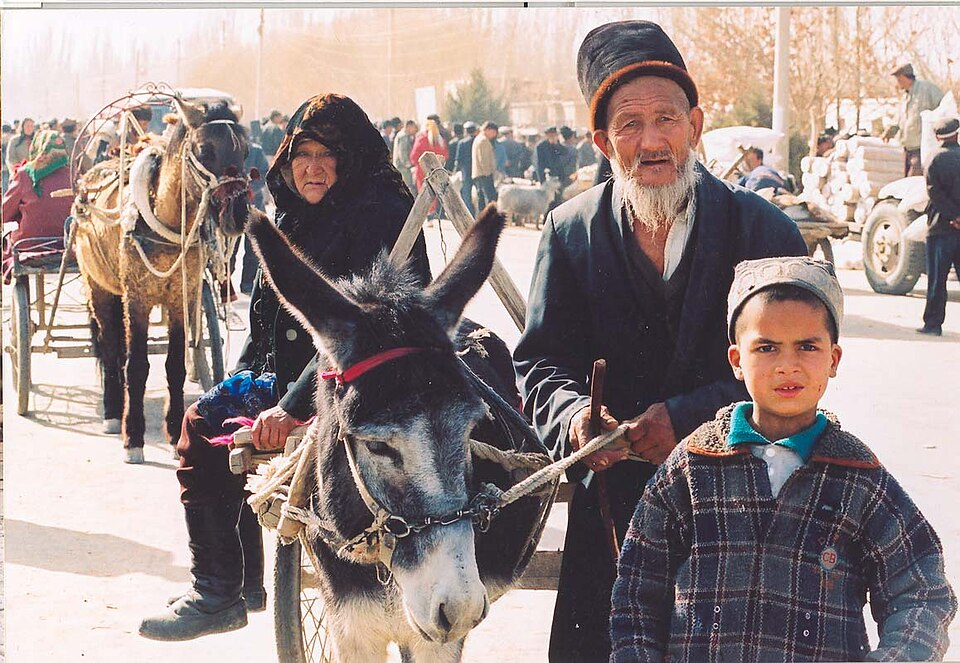

El 1 de julio entró en vigor la conocida como “ley de unidad étnica” tras su aprobación por la Asamblea Nacional Popular. La ley que promete la integración de los 56 grupos étnicos en la República Popular China ha provocado gran desconfianza entre opositores y organizaciones internacionales que ven en ella un paso más en la persecución que el presidente Xi Jinping ha realizado desde el principio de su mandato.
“Desarrollo de alta calidad y la prosperidad común”
El objetivo expreso de la ley de unidad étnica es la creación de una identidad nacional a través de la integración. El ejecutivo asegura que esta acción es necesaria para crear unidad alrededor del liderazgo del partido y sentimiento nacional. Entre sus efectos, esta ley establece el mandarín como lengua principal en la educación (incluyendo en las regiones autónomas), establece la obligación de los padres de enseñar en el amor a “la gran patria, el pueblo chino, la cultura china, el Partido Comunista de China y el socialismo con características chinas” e insta a la asimilación de las diferentes religiones a la cultura china. Todo ello tiene la intención de perseguir las actividades que “socaven la unidad étnica o creen división étnica”. Además, establece que se podrá aplicar esta legislación a actividades realizadas por individuos u organizaciones fuera de sus fronteras.
Todos estos factores han granjeado numerosas críticas. El Alto Comisionado de las Naciones Unidas para los Derechos Humanos aseguró que la ley podría restringir las libertades religiosas, culturales y de reunión; Amnistía Internacional criticó la poca precisión en la definición de las actividades que persigue y la Unión Europea condenó la supresión sistemática de las identidades étnicas del país.
El evento más impactante como protesta contra la aprobación de la ley se vivió solamente un día después del comienzo de su aplicación cuando, el 3 de julio, un activista se autoinmoló enfrente de la sede de la ONU mientras sujetaba una bandera tibetana. Al mismo tiempo, en Facebook, fue publicado un video donde acusó al gobierno chino de tener la intención de “destruir la identidad, cultura y lengua tibetana”

Tres miembros de la etnia uigur en un mercado
Autor: Todenhoff
1.400.000 habitantes, 56 etnicidades
El gobierno chino reconoce 56 etnicidades de las cuales la han es la más numerosa, representando alrededor de un 91% de la población del país. Esta etnia ha dominado la política desde la fundación de la República Popular China en 1949. A pesar de ello, el presidente Mao Zedong defendió la autonomía de algunas minorías étnicas y a día de hoy existen cinco regiones autónomas: Guangxi, Mongolia Interior, Ningxia, Sinkiang y Tíbet.
Sin embargo, desde el fin de la Guerra Fría han aumentado los acontecimientos violentos en estas regiones y en la elites del gobierno ha crecido el sentimiento nacionalista han. Con la elección de Xi Jinping como nuevo presidente de China en 2013, este sentimiento se ha convertido en acción. Su política de “sinización” (asimilación a la cultura han) ha involucrado un aumento de la represión contra la libertad religiosa y contra las minorías étnicas del país.
"Documentos filtrados revelaron la existencia de campos de reeducación para uigures"
Associated Press informó en 2018 que el gobierno chino había cerrado numerosas iglesias en Pekín y la provincia de Henan acusadas de no haberse apuntado en el registro oficial, quemando biblias y cruces en el proceso. Desde 1995, el panchen lama (figura religiosa budista encargada de encontrar al Dalai Lama) se encuentra desaparecido tras su detención por el gobierno chino con el fin de poder controlar quién será el próximo líder espiritual de Tíbet.
Pese a todo, las minorías musulmanas probablemente sean las más perseguidas por el gobierno. Diferentes regiones del país han prohibido actos como ayunar durante el mes de Ramadán, llamar a los hijos con nombres “demasiado religiosos” como Mohamed o han forzado a presos musulmanes a comer cerdo. Además, documentos filtrados en 2019 revelaron la existencia de campos de reeducación donde uigures (etnia de mayoría musulmán) son internados y sufren encarcelamiento sin juicio, tortura y las separación de menores y sus padres, según han relatado numerosos testimonios.
Una violencia en aumento
Es difícil conocer rápidamente cómo será la aplicación de esta nueva legislación en un país con un control tan férreo de la información. El constante endurecimiento contra las minorías étnicas que ha vivido el país ha sido paralelo al recrudecimiento de la violencia de estos grupos reclamando autonomía o independencia. La lucha contra "las actividades violentas terroristas, separatistas de carácter étnico o extremistas religiosas" que el Dalai Lama ha llamado genocidio cultural no parece que vaya a frenarse.